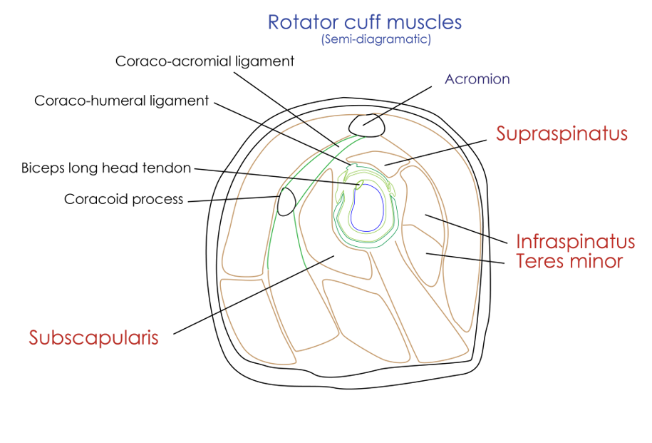

Rotator Cuff Muscles
= Musculotendinous Cuff
An anatomical sleeve of four intrinsic scapulohumeral muscles whose flattened tendons blend intimately with the fibrous capsule of the glenohumeral (shoulder) joint
It forms a dynamic protective cuff around the anterior, superior, and posterior aspects of the joint

Components of the Rotator Cuff (SITS)
| Muscle | Origin | Insertion | Innervation | Primary Action |
|---|---|---|---|---|
| Supraspinatus | Supraspinous fossa of scapula | Superior facet of greater tubercle of humerus | Suprascapular nerve (C5, C6) | Initiates arm abduction (first 0°–15°) |
| Infraspinatus | Infraspinous fossa of scapula | Middle facet of greater tubercle of humerus | Suprascapular nerve (C5, C6) | Powerful lateral (external) rotator of arm |
| Teres minor | Upper 2/3 of lateral border of scapula | Inferior facet of greater tubercle of humerus | Axillary nerve (posterior branch) (C5, C6) | Lateral rotator and weak adductor of arm |
| Subscapularis | Subscapular fossa of scapula | Lesser tubercle of humerus | Upper and lower subscapular nerves (C5, C6) | Medial rotator and adductor of arm |
Functional Role & Biomechanics
Dynamic stabilizers
- While the glenoid cavity is shallow and intrinsically unstable, the rotator cuff acts as the primary dynamic stabilizer of the shoulder joint
- By contracting as a coordinated unit, these muscles compress and seat the large, rounded humeral head firmly against the shallow glenoid cavity (concavity-compression mechanism)
Force Couple Mechanism
- During arm abduction, the deltoid pulls the humerus vertically upward toward the acromion
- The subscapularis, infraspinatus, and teres minor exert an opposing downward and inward pull (inferior vector), counterbalancing the deltoid and preventing the humeral head from impinging against the under-surface of the coracoacromial arch
Bursae in Relation to the Rotator Cuff
- Subacromial / Subdeltoid Bursa: Located between the coracoacromial arch and acromion above, and the supraspinatus tendon and capsule below.
- Subscapular Bursa: Situated between the tendon of subscapularis and the neck of the scapula
- Infraspinatus Bursa: Separates the infraspinatus tendon from the posterolateral joint capsule
Applied Aspects
- Supraspinatus Tendinitis & Impingement Syndrome:
- The supraspinatus tendon is the most frequently injured component of the cuff.
- Because it traverses a narrow space beneath the rigid coracoacromial arch, repetitive overhead abduction causes mechanical friction and microtrauma.
- Painful Arc Syndrome:
- In subacromial impingement or supraspinatus tendinitis, the patient experiences severe pain during abduction between 60° and 120° as the inflamed tendon and bursa compress against the acromion. Pain eases beyond 120° once the tuberosity rotates clear of the arch.
- Rotator Cuff Tear:
- Sudden violent stress or chronic attrition can tear the cuff (most commonly at the insertion of the supraspinatus).
- A full-thickness tear causes immediate inability to initiate abduction smoothly; patients characteristically shrug their shoulder or tilt their trunk sideways to recruit the deltoid.
- Empty Can Test (Jobe’s Test):
- Specific clinical test for supraspinatus integrity: the arm is abducted to 90° in the scapular plane (30° anterior to frontal plane) and fully internally rotated (thumbs pointing down). Downward resistance is applied; pain or weakness indicates supraspinatus pathology.
- Lift-Off Test (Gerber's Test):
- Evaluates the subscapularis: the patient places the dorsum of their hand on the mid-lumbar spine and attempts to lift it actively off the back against resistance.